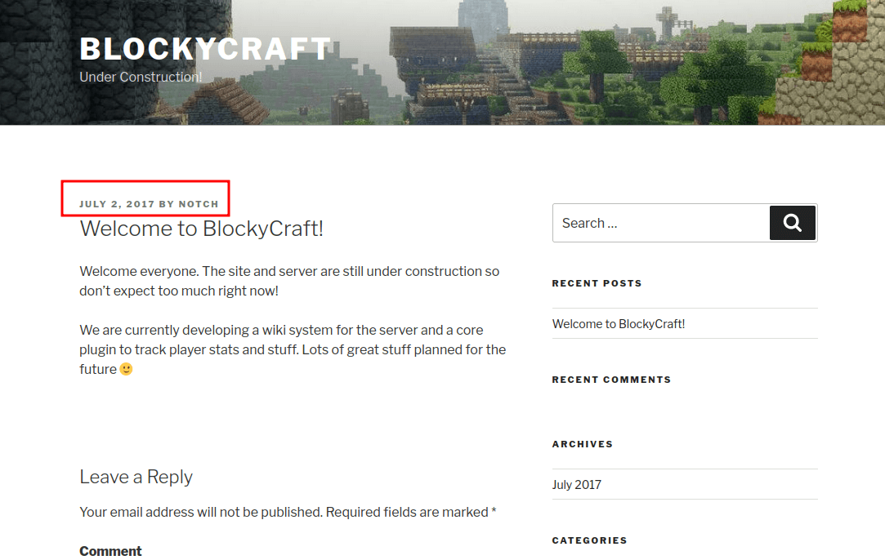
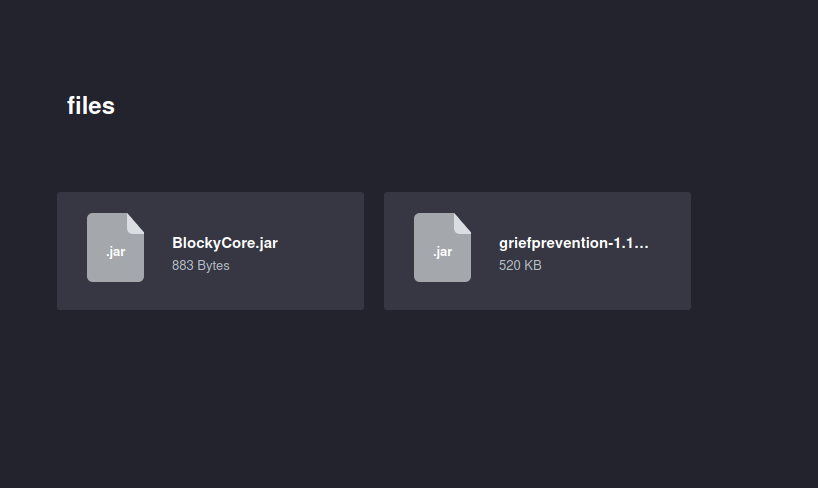
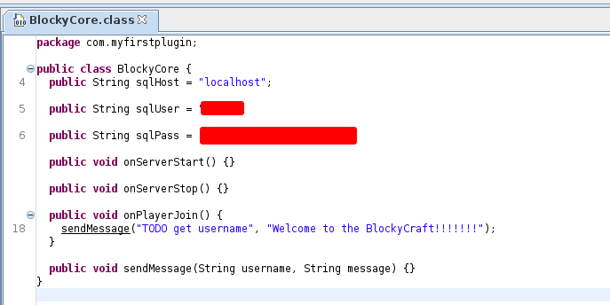
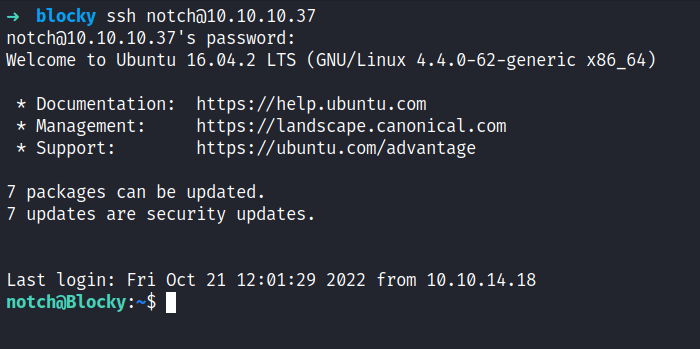

HackTheBox - Blocky Writeup
Table of Contents
Nmap
Like always, I’m going to scan the IP address by using nmap but I’m going to scan the full port first. Then, I’m going to scan the only open ports.
nmap -p21,22,80,25565 -sCV -oN nmap/blocky 10.10.10.37
21/tcp open ftp ProFTPD 1.3.5a
22/tcp open ssh OpenSSH 7.2p2 Ubuntu 4ubuntu2.2 (Ubuntu Linux; protocol 2.0)
| ssh-hostkey:
| 2048 d62b99b4d5e753ce2bfcb5d79d79fba2 (RSA)
| 256 5d7f389570c9beac67a01e86e7978403 (ECDSA)
|_ 256 09d5c204951a90ef87562597df837067 (ED25519)
80/tcp open http Apache httpd 2.4.18
|_http-server-header: Apache/2.4.18 (Ubuntu)
|_http-title: Did not follow redirect to http://blocky.htb
25565/tcp open minecraft Minecraft 1.11.2 (Protocol: 127, Message: A Minecraft Server, Users: 0/20)
Service Info: Host: 127.0.1.1; OSs: Unix, Linux; CPE: cpe:/o:linux:linux_kernel
The nmap scan result is completed. Looks like, I’m dealing with an Ubuntu linux machine based on the OpenSSH service banner. On top of that, it’s running FTP, Apache, and Minecraft also based on my nmap scan it’s found a hostname called blocky.htb. So, I’m going to add that in my /etc/hosts file.

Http: blocky.htb
I already add the IP address to the /etc/hosts file. So, I navigated to http://blocky.htb in my browser. It’s just a simple blog page titled BlockyCraft which is using WordPress because when I scrolled down at the bottom of it, it says “Proudly powered by WordPress”. Upon enumerating this website, I manage to find a single username called Notch aka Minecraft god. :)

Http: /wp-admin
Since this is a WordPress site and I already have a username. I navigate through the /wp-admin which is a login form for this cms. I’ll try a bunch of passwords and nothing useful came out of it.
Gobuster
Based on the extension of the index file. Turns out, it is a php webserver. Now, I’m going to run gobuster with the -x flag for looking up only the .php extension. To my surprise, it has a bunch of directories and files. However, the one that caught my eye is /phpmyadmin/. However, it required the credentials which I did not have on me.

Http: /plugins
I ended up going through all the directories that gobuster found earlier. Fortunately, I managed to find the .jar file located in /plugins which is the first directory that I navigated to. So, I downloaded all the files into my current working directory.

Based on the extension of the file, which is .jar, I’m firing up jd-gui to decompile those java files into human-readable. Shockingly, the file called BlockyCore.jar have hardcode credentials on it and with these credentials, I manage to login on to /phpmyadmin/ and change the notch user password.

SSH: Notch
However, I can ssh into this machine with those credentials that I found earlier and I’m in as a notch.

Root
Then, I’ll try to enumerate the sudo permissions by running this command sudo -l. Surprisingly, this user has all access to everything and I ended up just running the command sudo su to get the root shell.

NICE!